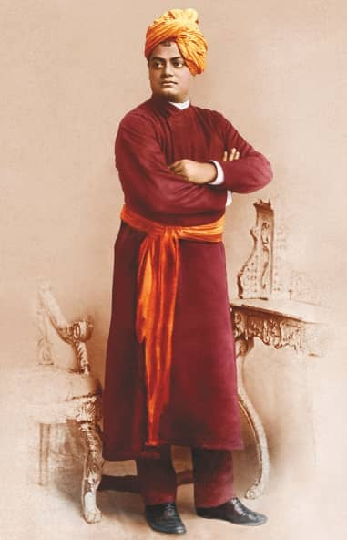

|  |
I am Indian Hindu monk and philosopher
Swami Vivekananda Bengali: [ʃami bibekanɔndo] (About this soundlisten); 12 January 1863 – 4 July 1902), born Narendranath Datta (Bengali: [nɔrendronatʰ dɔto]), was an Indian Hindu monk and philosopher. He was a chief disciple of the 19th-century Indian mystic Ramakrishna.[4][5] Influenced by Western esotericism,[6][7][8] he was a key figure in the introduction of the Indian darsanas (teachings, practices) of Vedanta and Yoga to the Western world,[9][10][11] and is credited with raising interfaith awareness, bringing Hinduism to the status of a major world religion during the late 19th century.[12] He was a major force in the contemporary Hindu reform movements in India, and contributed to the concept of nationalism in colonial India.[13] Vivekananda founded the Ramakrishna Math and the Ramakrishna Mission.[10] He is perhaps best known for his speech which began with the words "Sisters and brothers of America ...,"[14] in which he introduced Hinduism at the Parliament of the World's Religions in Chicago in 1893.
Born into an aristocratic Bengali Kayastha family of Calcutta, Vivekananda was inclined towards spirituality
|